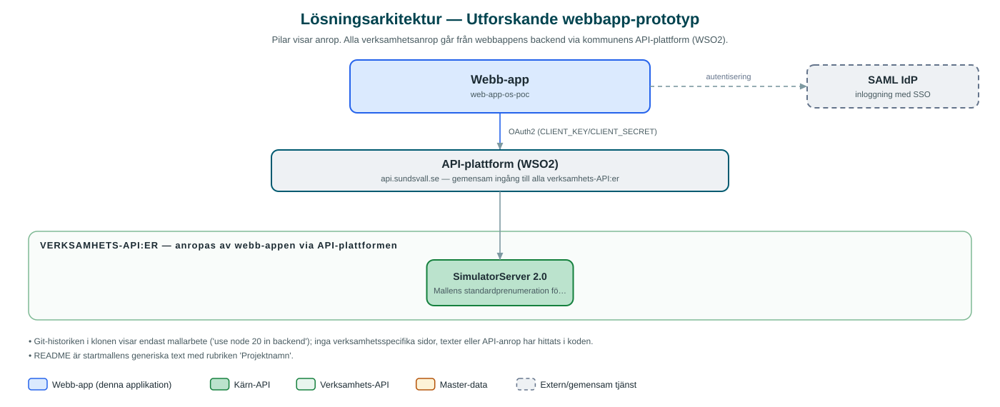

Utforskande webbapp-prototyp
Ett i stort sett orört skal av kommunens webbapp-startmall, uppsatt som proof-of-concept utan implementerad verksamhetsfunktion.
Om applikationen
Repot är en klon av kommunens standardmall för webbappar (web-app-starter) med frontend, backend och administrationsgränssnitt, men innehåller ingen egen verksamhetslogik – sidorna består av mallens exempel- och inloggningssidor.
Vad förkortningen 'os' i namnet syftar på framgår inte av koden, och eftersom ingen funktionalitet byggts utöver mallen är syftet osäkert. Repot bör betraktas som ett tekniskt experiment eller en startpunkt som inte utvecklats vidare.
Det här stödjer applikationen
- Komplett mallstruktur – Frontend, backend och admin-gränssnitt enligt kommunens startmall.
- Inloggningsflöde – Mallens färdiga SAML-inloggning med behörighetsgrupper.
- Exempelsidor – Endast mallens exempelsida och inloggningssida finns implementerade.
Teknisk dokumentation
Nedan beskrivs hur applikationen är uppbyggd, vilka API:er den använder och vad som krävs för att driftsätta den. Informationen är härledd ur källkoden och dess konfiguration på GitHub.
Arkitektur

Applikationen består av en webbaserad frontend (Next.js (App Router), React, TypeScript, sk-web-gui, Tailwind CSS) och en backend (Node.js, Express, routing-controllers, Passport SAML) som utvecklas i samma kodbas. Verksamhetsanrop går via kommunens gemensamma API-plattform (WSO2) – frontend pratar aldrig direkt med underliggande system. Inloggning: SAML (SSO) enligt startmallen. Övriga integrationer som förekommer i koden: SAML IdP.
Teknikstack
- Frontend: Next.js (App Router), React, TypeScript, sk-web-gui, Tailwind CSS
- Backend: Node.js, Express, routing-controllers, Passport SAML
API-beroenden
Applikationen konsumerar följande API:er via kommunens API-plattform. Versionerna är hämtade ur källkodens API-konfiguration.
| API | Version | Användning |
|---|---|---|
| SimulatorServer | 2.0 | Mallens standardprenumeration för simulerade svar |
Konfiguration och driftsättning
- .env-filer enligt startmallens exempel för frontend, backend och admin
- SAML-certifikat och API-nycklar enligt mallen
Noterbart ur källkoden
- Git-historiken i klonen visar endast mallarbete ('use node 20 in backend'); inga verksamhetsspecifika sidor, texter eller API-anrop har hittats i koden.
- README är startmallens generiska text med rubriken 'Projektnamn'.
Källkod
Källkoden är öppen och finns hos Sundsvalls kommun på GitHub. I källkodsförrådet finns även instruktioner för att klona, konfigurera och starta applikationen i egen miljö.